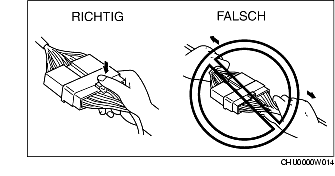
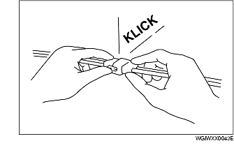
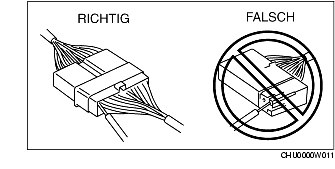

ELEKTRISCHE ANLAGE
B3E000000006M01
Steckverbinder
Abklemmen von Steckverbindern
-
• Beim Abklemmen von Steckverbindern die Steckverbinder greifen, nicht die Kabel.

-
• Steckverbinder können durch Lösen der Arretierung wie abgebildet abgezogen werden.

Zusammenstecken von Steckverbindern
-
• Beim Zusammenstecken von Steckverbindern auf das Klickgeräusch achten. Dies zeigt, dass diese sicher verbunden sind.

Prüfung
-
• Wenn ein Tester verwendet wird, um auf Durchgang zu prüfen oder die Spannung zu messen, die Prüfspitze von der Kabelbaumseite einführen.

-
• Die Klemmen von wasserdichten Steckverbindern von der Steckverbinderseite aus prüfen, da sie von der Kabelbaumseite nicht zugänglich sind.
-
Achtung
-
• Um Schaden an der Klemme zu vermeiden, einen dünnen Draht um die Prüfspitze wickeln, bevor sie in die Klemme eingeführt wird.